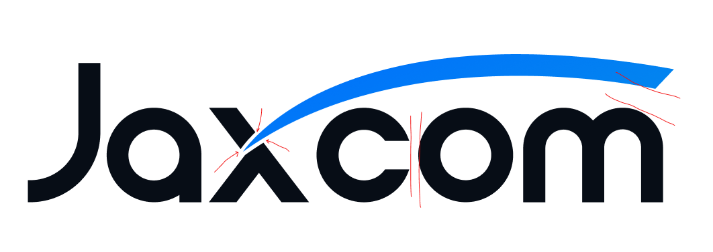
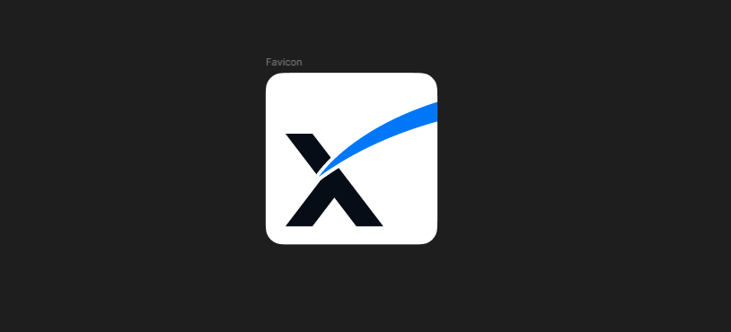
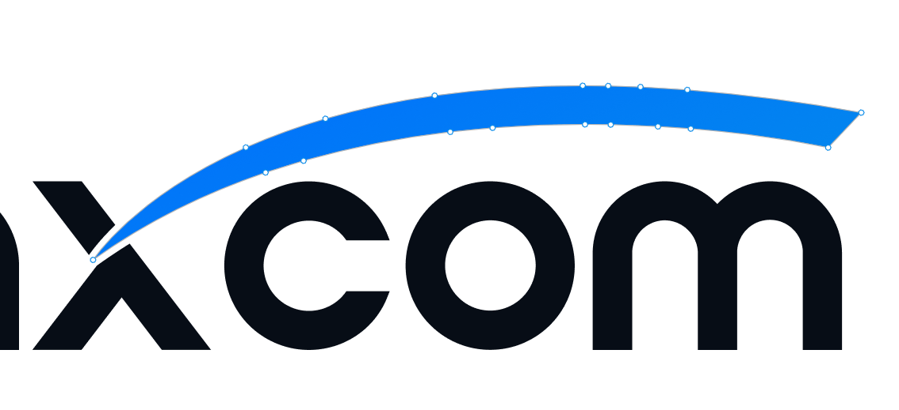
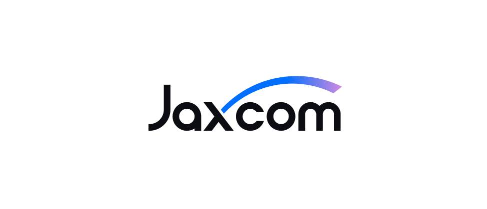
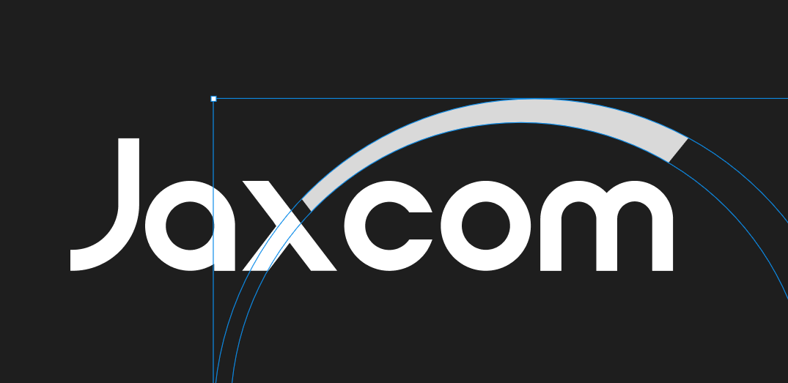
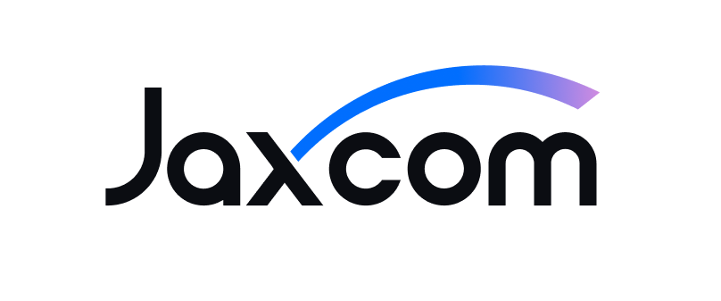

Jaxcom V4 Logo Refresh
Note
This V4 logo is a concept in progress—a direction we’re validating before final production artwork. It will continue to evolve through refinement, testing at real sizes, and export/implementation checks.
Overview
This document captures the thinking behind the Jaxcom V4 logo refresh concept—from the real-world issues observed in V3 to the design decisions guiding a proposed new construction. This is a work-in-progress concept, intended to validate form, balance, and scalability before final production artwork.
The goal is a mark that feels familiar at first glance, but performs better everywhere it needs to live: mobile headers, favicons, social avatars, ads, and print.
At a high level, V4 focuses on three things:
- Clarity at small sizes (reducing micro-tension and noisy counters)
- More consistent rhythm (spacing, weight distribution, and optical balance)
- A simplified, repeatable arc that’s easier to reproduce accurately
History
{kind=link}
The current Jaxcom logo (V3) has gone through the following key versions over the last few years:
- Major fixes around construction irregularities
- V2 — the first major brand refresh, adopting new colors
- V3 — a refinement of V2 with a more scalable color palette
V3 Critique
The original form of the logo has served us well over the years. But as we mature, there are refinements we can adopt to take it to the next level. Before we dive into updates, let’s address a few core areas for improvement.
On small screens the logo has a lot of tense areas. Especially around the ‘x’.
{kind=link}
The gaps feel uneven and create visual tension across the logo.
{kind=link}

These uneven gaps introduce visual noise and reduce clarity at small sizes.
The X Factor
The X is a great branding element that can be used for icons and emblems but the current form falls short visually when utilized in a 1:1 form factor as it looks unbalanced.
{kind=link}

The Arc
{kind=link}

The construction of the V3 arc has too many anchor points, resulting in an overly complex form.
The Goal & Challenges
Our goal is to resolve the current issues with an identity that feels new, but unmistakably Jaxcom.
Success looks like:
- Cleaner forms at small sizes (mobile, favicon, social)
- More consistent spacing and rhythm across letterforms
- A simplified arc construction that’s easier to reproduce consistently
- An “X” that can stand alone as a balanced icon
Project framing
This refresh is an exercise in optimization, not reinvention. The intent is to preserve the equities that already work—recognition, attitude, and the distinctive “Jaxcom” silhouette—while removing the friction points that show up in real-world use (small sizes, low-resolution contexts, and quick-glance situations).
Primary objectives
- Legibility & reduction: fewer fussy interior tensions; calmer negative space
- Consistency: more even rhythm across letterforms and spacing
- Versatility: a standalone “X” mark that holds in a square canvas
- Reproducibility: geometry that’s easy to rebuild and hard to accidentally distort
Key constraints
- Must remain instantly recognizable as Jaxcom (no “new brand” shock)
- Must scale cleanly from favicon to signage
- Must work in single color as confidently as it does in the full palette
What wasn’t working in V3 (in practice)
From a distance, V3 reads strong. The issues show up as you push it into modern environments:
- Micro-tension around the “x”: tight interior corners and uneven counters start to clump at small sizes
- Inconsistent spacing: the cadence between letters doesn’t feel evenly tuned, which makes the wordmark feel less deliberate
- Overbuilt arc: too many anchor points create a form that’s harder to keep consistent across files, exports, and iterations
Introducing V4 (Concept)
{kind=link}

The V4 logo introduces a new arc. It eliminates the tense gaps around the “x”, and spacing around the “c” is now more uniform. The arc is more defined, more curved, and rises slightly higher than before. It symbolizes momentum—a wave—and a shield.
The “J” extends slightly higher to improve optical balance and better distribute weight across the wordmark.
Design approach (how V4 was built)
V4 focuses on optical geometry—not perfect math for its own sake, but a construction that produces consistent visual results:
- Simplified arc construction: fewer points, cleaner curves, and a repeatable build logic
- Optical spacing adjustments: whitespace tuned to look even (especially around the “x” and “c”), not just measure evenly
- Improved stress points: smoother transitions where forms converge, reducing “pinching” in small renders
Why the new arc matters
The arc is the signature gesture in the mark. In V4 it’s designed to be:
- More intentional: a clearer silhouette that reads quickly
- More energetic: a slightly higher rise that communicates momentum
- More symbolic: a dual read as wave + shield (progress + protection)
The New X Factor
{kind=link}
No tense areas. Visually balanced. Perfect for small form factors like favicons.
By collapsing three interior splits into two, the “X” becomes less busy, the negative space becomes more stable, and the icon holds up better in favicons, app icons, and social avatars.
Icon performance (1:1)
The updated “X” is designed to survive the harshest test: a square canvas at tiny sizes. The goal is a mark that retains:
- Clear interior negative space
- Symmetry that feels stable (not top-heavy or lopsided)
- A silhouette that remains identifiable even when anti-aliasing gets aggressive
The New Arc
{kind=link}

The new Jaxcom arc has a clean geometric construction. Built with 2 circles and visually refined.
Deliverables & usage notes (draft)
- Primary lockup: Jaxcom wordmark (full)
- Secondary mark: standalone “X” for avatar/favicons/app icons
- Recommended minimum sizes: validate at 16px, 24px, 32px, 48px before finalizing
- Color & mono: confirm strong read in 1-color and reversed-out applications
Next steps
- Export V4 as clean vector master (SVG/PDF) and a production-ready icon set
- Test in real placements: website header, mobile nav, favicon, social avatar, and ad thumbnails
- Final pass: spacing micro-adjustments + curve smoothing based on those render tests
{kind=link}
